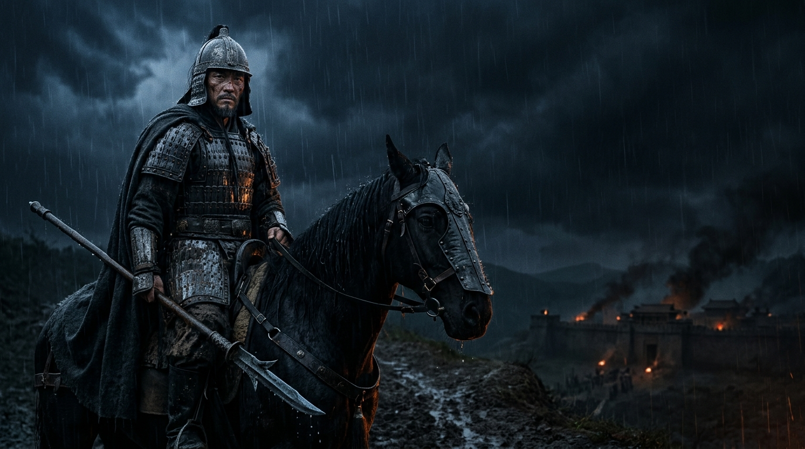
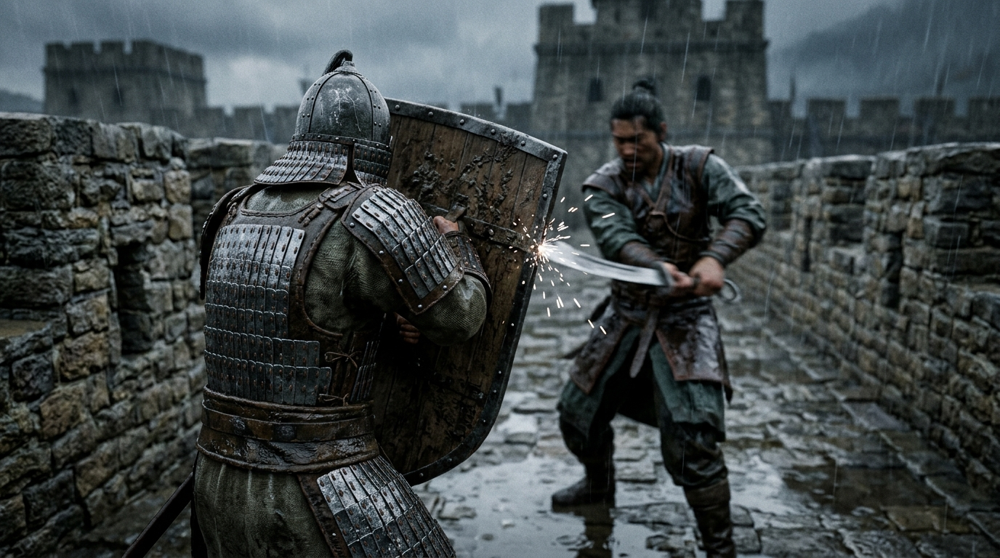
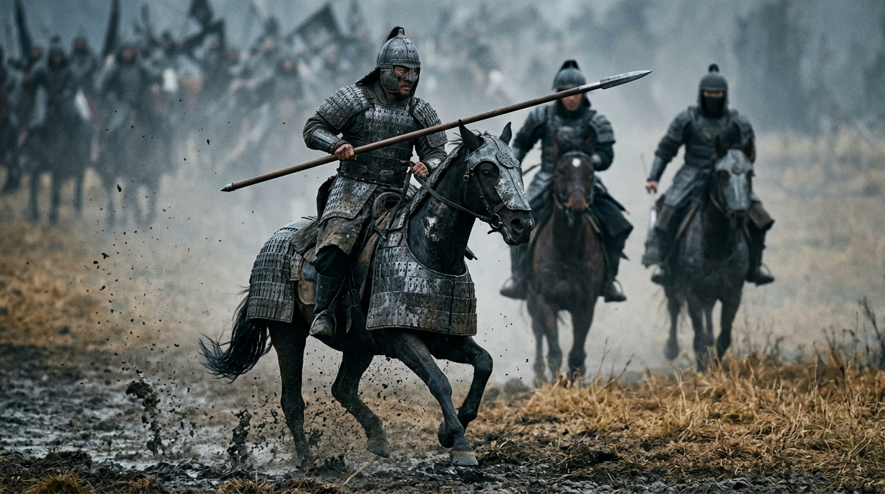
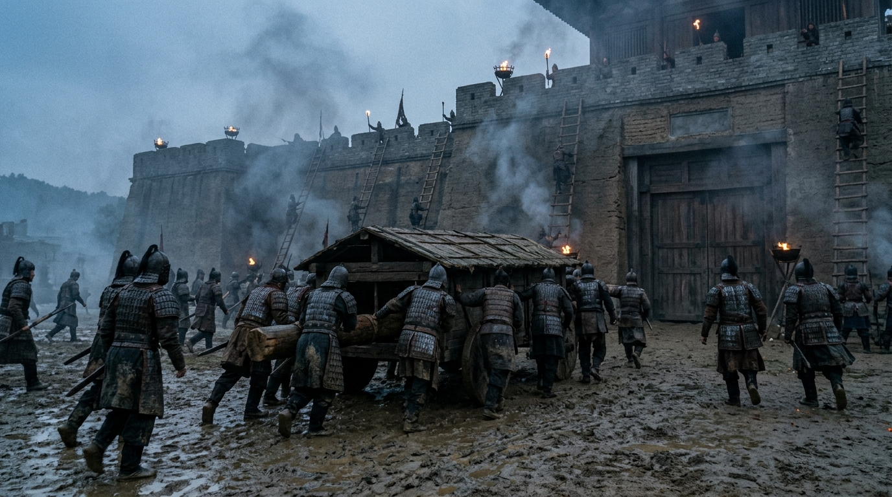
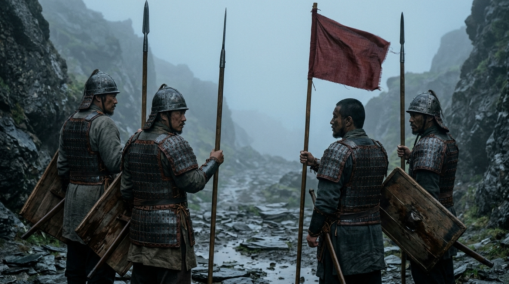

致玩家尺牍：一条艰难但不会停服的路
对于个人来说制作一款大型联机网游，工程量实在浩繁，面临着多人挥砍延迟同步、海量甲胄美术资产与数值平衡的重重难关。
然而个人独立开发亦有大厂无法比拟的优势——我们可以用极低的成本长久把服务器开下去，不必背负商业流水指标，绝不会重演“因为不够赚钱而突然停服”的遗憾。
这不仅是我一个人的执念，更是属于所有冷兵器同好的共创阵地。无论你有何种玩法点子、手感建议或是批评，皆欢迎进群畅所欲言。
—— 独立开发者 谨启

当前正处于阶段一：重点打磨五种初始兵器的动作模组、打击停顿手感与刀刃分段伤害判定




告别滚键盘的无脑释放技能，《代号：逐鹿》采用极具操作深度的四向挥砍与格挡系统。每一次出刀与举盾，都需要精准判断距离、挥击轨迹与变招时机。
痛惜《刀锋铁骑》停服，一人一机自学虚幻引擎，搭建硬核冷兵器碰撞底层。
完善初始五兵动作模组与挥砍手感，实装武器分段与部位伤害系统。
启动 10 人以内小范围线上联机测试，验证低延迟刀刃碰撞同步表现。
向群内关注支持的老兵发放首批资格，开放骑步对抗与攻城战雏形。
扩充历史战场、攻城器械与军团领地玩法，低成本长线稳定运营。
对于个人来说制作一款大型联机网游，工程量实在浩繁，面临着多人挥砍延迟同步、海量甲胄美术资产与数值平衡的重重难关。
然而个人独立开发亦有大厂无法比拟的优势——我们可以用极低的成本长久把服务器开下去，不必背负商业流水指标，绝不会重演“因为不够赚钱而突然停服”的遗憾。
这不仅是我一个人的执念，更是属于所有冷兵器同好的共创阵地。无论你有何种玩法点子、手感建议或是批评，皆欢迎进群畅所欲言。
冷兵器对战之魂在于公平技艺。计划未来登陆 Steam 平台，核心对战绝不做破坏平衡的数值逼氪，专注纯粹的战场博弈。
完成当前阶段一战斗打磨后，将优先在官方交流 Q 群（782695976）内招募小规模联机技术测试，随后开启「老兵集结」首测。
正式测试版将提供多档画质与特效调节，确保主流配置在多人同屏混战时依然保持稳定高帧率。
欢迎直接加入 Q 群（782695976）讨论手感与机制，或致信合作邮箱 3933982086@qq.com。
扫码加入官方共创群，第一时间获取测试发码